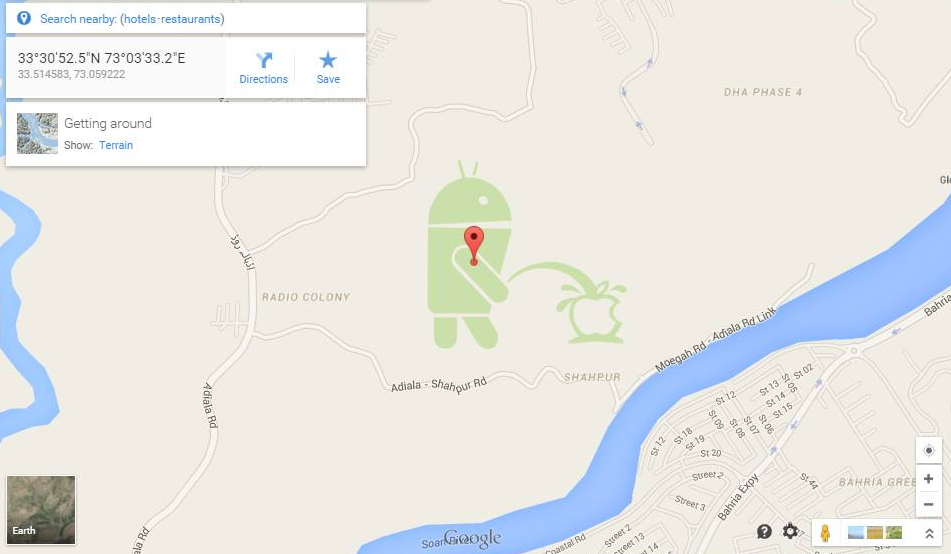
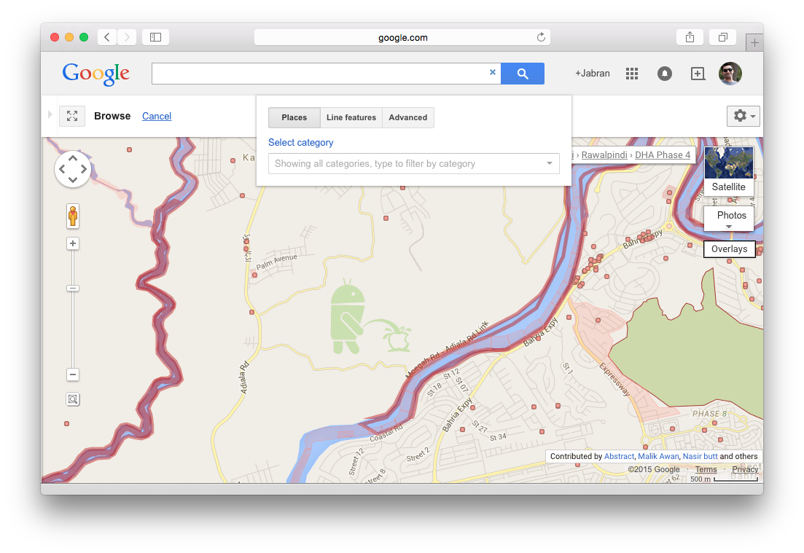
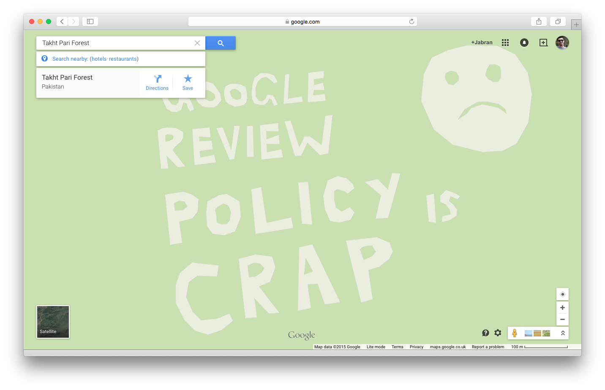
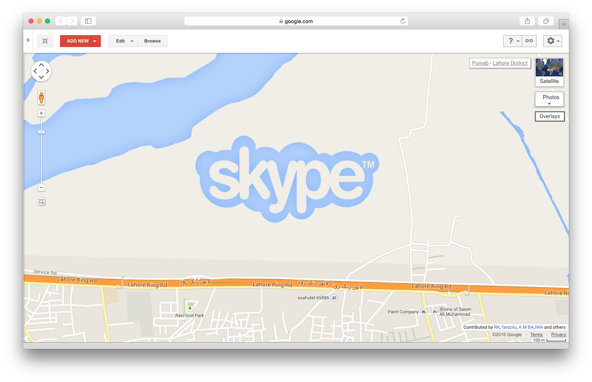
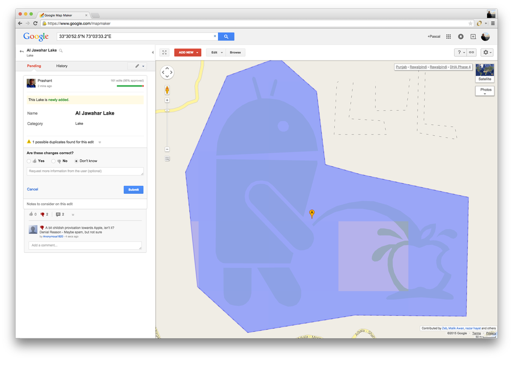

Android vs Apple at Google Maps
Yesterday was a fun day at Google Maps when many users came across few unusual figures in suburbs of Rawalpindi and later of Lahore. The first one – that I was made aware of by Awais Imran – was the Android bot peeing on Apple logo drawn in southern suburbs of Rawalpindi. Google Maps gets a lot of data from Google Map Maker, a crowd-sourced cartography platform.
Google Map Maker is supposed to get a lot of spam because of its nature but since edits are mostly reviewed and everything remains on record, it was bit surprising to see those huge size features going live into all mapping products. Out of curiosity, I went to Google Map Maker and tried to remove/edit the feature. But to my next surprise, it was not selectable therefore not editable. This was surprising because normally all user contributed features are selectable through Browse feature even if a feature is locked for editing i.e. territorial boundary. I tried and tried but in vain.
Since the feature was not selectable, there was no easy way to find who the editor may be. Generally, when you zoom in to an area in Map Maker, nicknames of top contributers to that particular area will appear at bottom right side. Editing history can easily be seen by clicking on those nicknames. But in this particular case, that was not possible since none of the listing contributer had anything like that in their Map Maker editing history. So I started to assume that it may be a user with special privileges behind this artwork/vandalism.
Soon this news went viral and was in every other news and tech blog, and site. Meanwhile Mashable reported a statment from Google stating:
A Google spokesperson got back to us, explaining that the image is likely a result of a user abusing Map Maker, the tool that allows everyone to contribute to Google Maps. "Even though edits are moderated, occasionally the odd inaccurate or cheeky edit may slip through our system," he said in a statement to Mashable. "We've been made aware of the issue and are working on getting it removed."
— Mashable UK
While going through comments section at ProPakistani tech blog, I came across another user reporting similar activity nearby—and not far but a bit further in south-east of above artwork. This was more like a message to Map Maker's reviewing system stating – Google review policy is crap – with a sad face next to it. I went through same practice as mentioned above and concluding the similar assumption as before.
Not much time past and there are reports of more spam on Google Maps. This time, it was nothing to do with Google or Apple but rather creative Skype logo in suburbs of Lahore. Once again, the feature was not selectable and not editable.
At this point, most were curious to know that who actually might have done it, situation further strengthened my previous assumption of someone involved with special privileges. Otherwise if this all were indeed users contribution then how these features got enough approvals at Map Maker to sneak into Maps. Finally, Richard Hintz posted a link to discussion from Reddit that pointed a link to a Map Maker profile with editing history of most of these above features. By this time, Google had already removed the features from Maps as well. By looking at this user's Map Maker profile, it is hard to say where this user is from and what were the real intentions. This all may be just for fun after all.
There is a fun part to it. In a hurry to hide the feature from growing attention, Google editors try to cover it with a large lake feature. During this attempt an engineer at Twitter Pascal Hartig screenshot it and posted to clarify that it is a user contributed feature—not realizing that the selected feature is not the feature in question but an object covering it and added 2 minutes ago by an editor named Prashant as seen at left hand side in following screenshot.
Reviewing at Google Map Maker
It is important to understand how reviewing (previously known as moderation) works at Map Maker. At Map Maker, technically, everyone who adds or edits at least a single feature is an editor and similarly everyone who reviews an edit is a reviewer. The platform works on some predefined algorithm that sets a level of trust for both types. More the accepted edits or reviews, more trusted the user will be in that particular category. That means, new users or less active users have more edits going into review. Similarly, a review by less active or newer reviewers for an edit would still require further reviewing by other senior reviewers.
Then there are super users from these contributors who are quite active, have better reviewing and editing trust levels. They were awarded with various titles over the past few years i.e. Regional Expert Reviewers(RER) and Advocates. They were responsible of keeping the community motivated and making sure that new users get the help they need. They would organize events regarding mapping, speak at those events and run MapUps (previously Mapping Parties) with sessions where everyone maps a selected area together. I think only Regional Expert Reviewers(RER) title is left from all these, at the moment.
Then there is an additional layer of editors and reviewers by Google itself. It is made of a mixture of bots and team of real users hired/paid by Google. These Googlers – as we call them normally in Map Maker community – add features, review edits and do more stuff. Since they normally work from Google's offices in Bangalore or Hydarabad, India, they do not possess sufficient ground level knowledge. The features they add are normally based on data coming from various mix sources of Google itself and third-parties, and not reliable. It is also suggested that they hold special editing and reviewing powers than usual contributers at Map Maker.
Unfortunately, this additional helping layer had not been very helpful to the Map Maker general community. A majority of contributers like me – who have been at this platform since it beginning – had not found Google Reviewers very helpful. They would rather get into extremely long and unnecessary discussions with editors over an edit and would neither approve it nor deny it—even sometime they would forget about it entirely. Since they had already make their input in reviewing of a feature, none of other reviewers' vote would now make any impact – ultimately putting the review status on hold, literally forever. Lots of map data added by their bots was sourced from outdated third party data and when noticed by local mappers, it would make no sense at all. Features listed at middle of no where and such. Anyhow, I think this is a topic for different time.
Coming back to topic, a Reddit user suggested that it may be a Googler behind all this and what if that is true then someone probably is getting fired! If that is so, Google definitely not going to make it public anyway but then does this make it easier to cover up such stuff by blaming it out to crowd-source community? That is just an assumption. By looking at the nitricboy profile, it is evident that user is not very new to the platform. User has made over 1000 edits and reviewed over 700 features. It is a good base where trust level is enough for a user to have their usual edits being approved automatically. Edits such as this smiley face that went live without any reviewing confirms such a trust level and type of usual edits this editor may had been making. Perhaps Google needs to tighten up its algorithm a bit more.
Update [05 May 2015]
Apparently, I got in touch with person behing nitricboy profile – goes by the name of Sahir Khan (not his real name though) and he mentioned that he did this out of frustration after facing long delays in reviewing and repeatidly denials of features without any reasonable explanations by reviewers especially by Google Reviewers. The person is an experienced Mapper but neither he is an Advocate or Regional Expert Reviewer. However, Google Map Maker is now in full review mode worldwide since this activity was reported. That means each and every edit going into review and only being published by approval of Google Reviewers.
Update [11 May 2015]
Google Map Maker is currently undergoing an upgrade that will strengthen the algorithm further to avoid any such incidents. During this time, Google Map Maker is read only (not available for editing and reviewing) which is a common practice during such upgrades. Read complete announcement at Product Forum